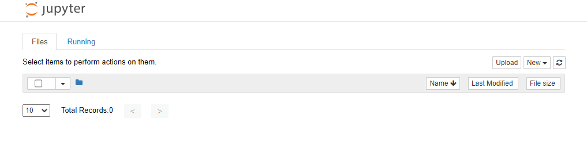
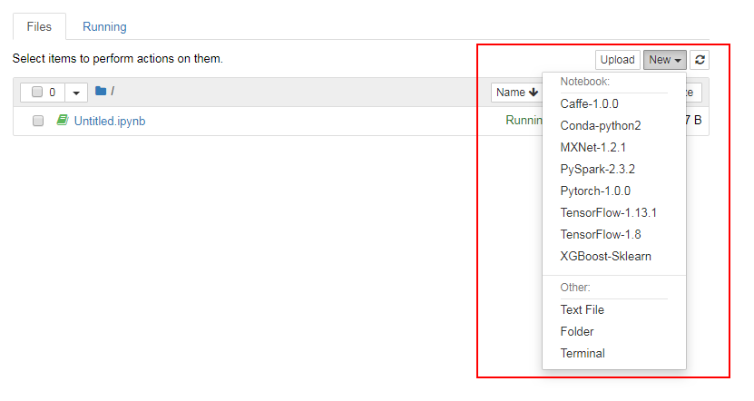
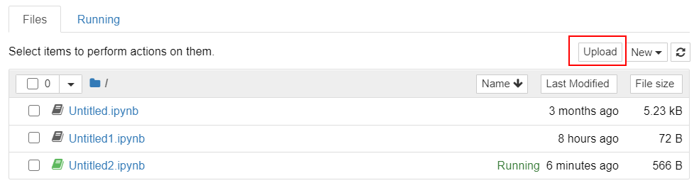
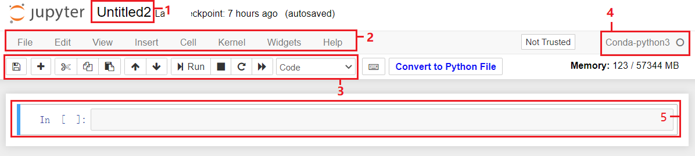
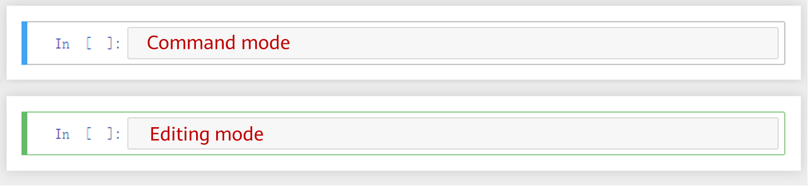
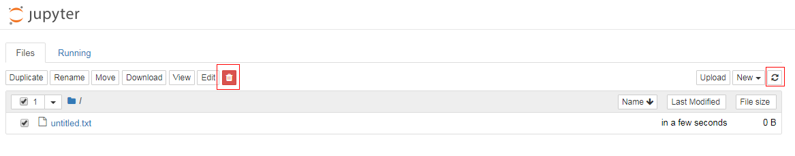

This section describes common operations on Jupyter Notebook.
Opening Jupyter Notebook
In the notebook instance list, locate the row where the target notebook instance resides and click Open in the Operation column to switch to the Jupyter Notebook page.
Two tab pages are available on the Jupyter Notebook page: Files and Running.

Selecting Different AI Engines to Create Files
Open a notebook instance and go to the Jupyter Notebook page. On the Files tab page, click New in the upper right corner, select the required AI engine, and create a file for encoding.

Uploading a File
Open a notebook instance and go to the Jupyter Notebook page. On the Files tab page, click Upload in the upper right corner to select a file from the local PC and upload it.

Compiling a File
After a file is created, click the file name to go to the file compilation page.

No. |
Area |
Description |
|---|---|---|
1 |
File name |
You can enter a user-defined file name in this area. After the file name is changed and saved, the new file name is updated to the file list accordingly. |
2 |
Menu bar |
The menu bar provides rich functions such as File, Edit, View, Insert, Cell, Kernel, and Help. For details, see Jupyter Notebook Documentation. The following toolbar provides common functions for compiling common Python running files. |
3 |
Toolbar |
The toolbar lists the common shortcut operations. From left to right, the shortcut operations are as follows: saving a file, adding a new cell, cutting a selected cell, copying a selected cell, pasting a selected cell, moving a selected cell upwards, moving a selected cell downwards, running a selected cell, terminating the kernel, restarting the kernel, and restarting the kernel and running all cells again. The Code drop-down list contains the following options:
|
4 |
AI engine and Python version |
Displays the AI engine and Python version corresponding to the current file. For details about all AI engines and Python versions supported by ModelArts, see Supported AI Engines. |
5 |
Code cell |
Each cell has two modes: command mode and editing mode. The blue bar on the left indicates the command mode, and the green bar indicates the editing mode (in this mode, the cursor exists in the cell and you can write code). In command mode, you can press Enter or click the code box to enter the editing mode. In editing mode, you can press ESC or click the left area of the code box to enter the command mode.  |
Deleting a File or Folder
To delete a file or folder from Jupyter Notebook, select the file or folder in the Files list and click the Delete button.

After the file or folder is deleted, click the Refresh button in the upper right corner to refresh the Jupyter page and clear the cache.
